Metabolic Interactive Nodular Network for Omics (MINNO) is a D3 javascript library based web application to visualize biological data onto metabolic networks. Besides visualization, this tools offer various ways to share data and results to facilitate collaboration across multiple research groups globally. Being a web-application, it does not require any installation and it can be run on both Chrome and Mozilla browsers.
The tool accepts any kind of omics data, including metabolomics, proteomics, and fluxomics data as long as they can be visualized by changing sizes of nodes and edges of the metabolic network. The modular design promotes accelerated investigation of omics data on genome-scale metabolic networks for multiple species.
MINNO utilizes two biological databases: Kyoto Encyclopedia of Genes and Genomes (KEGG) and National Center for Biotechnology Information- Reference Sequence (NCBI-RefSeq) database.
The below instructions provide guidelines for various features that MINNO provides to the users.
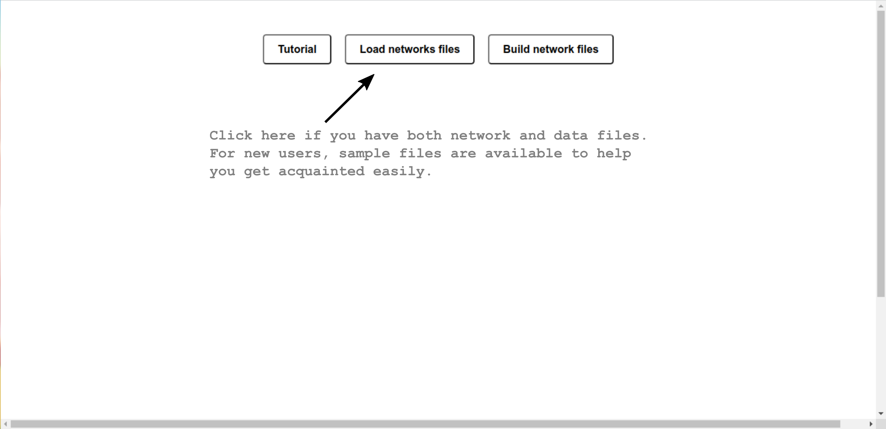
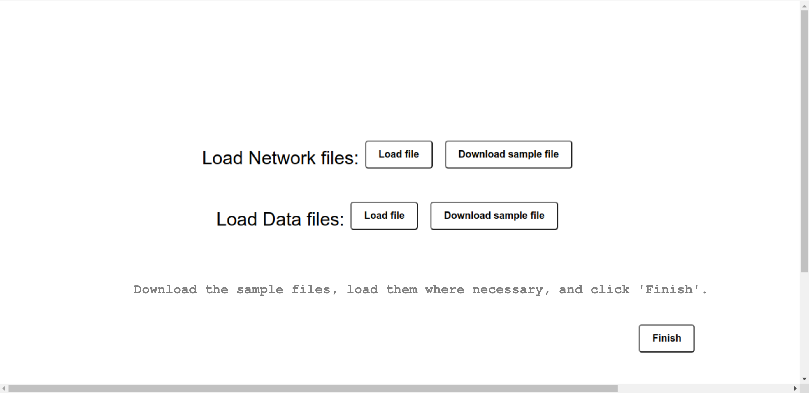
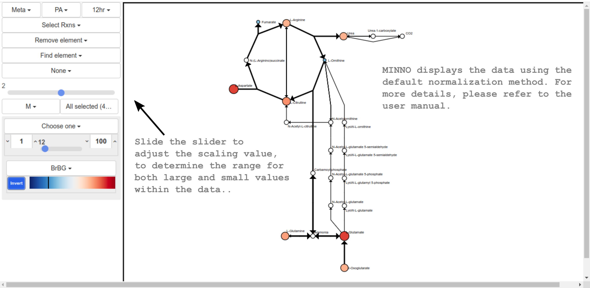
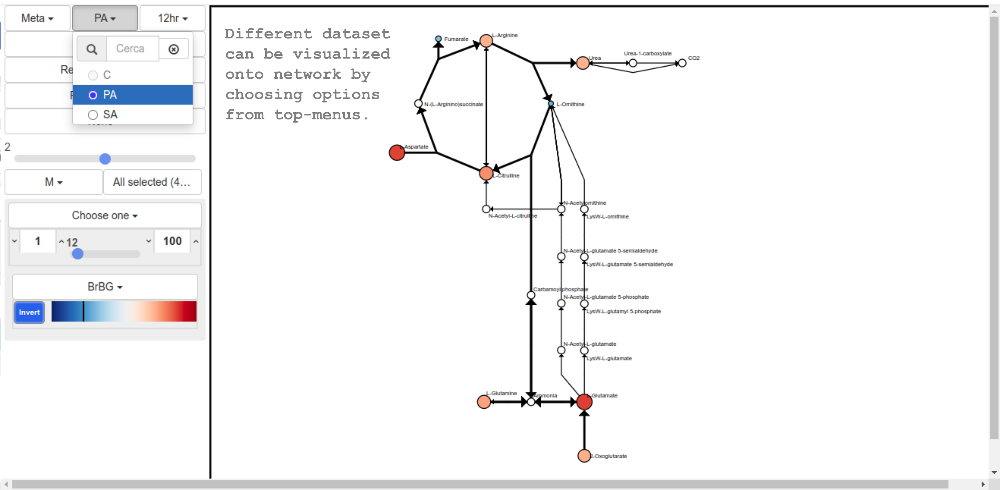
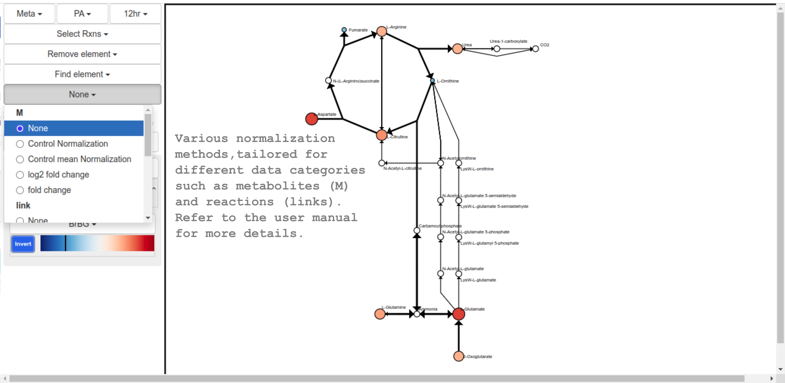
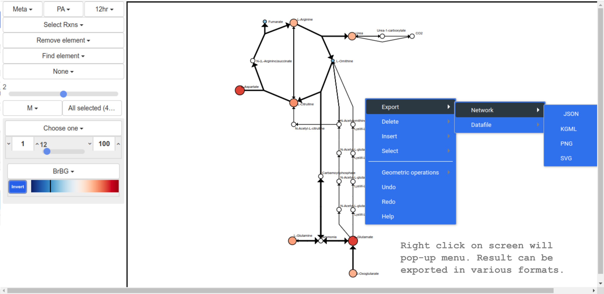
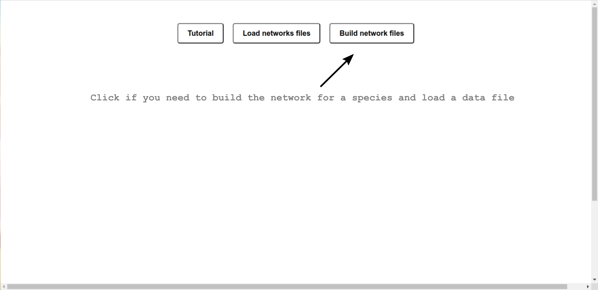
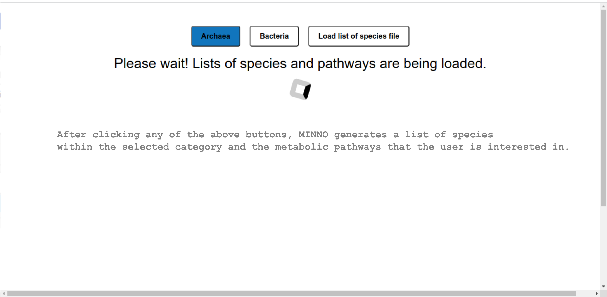
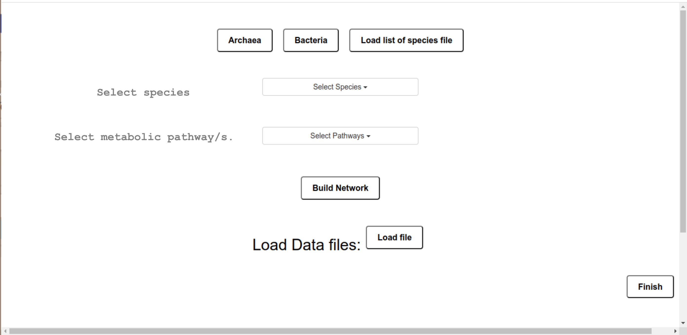
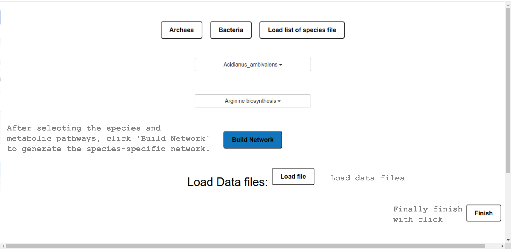
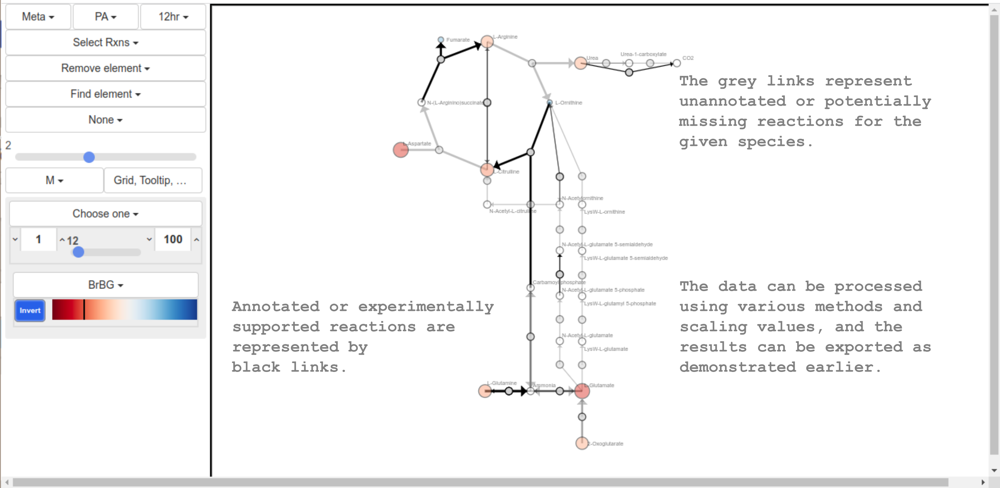
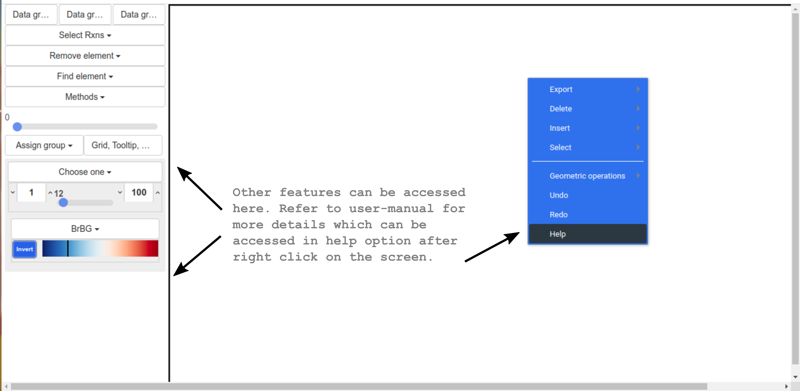
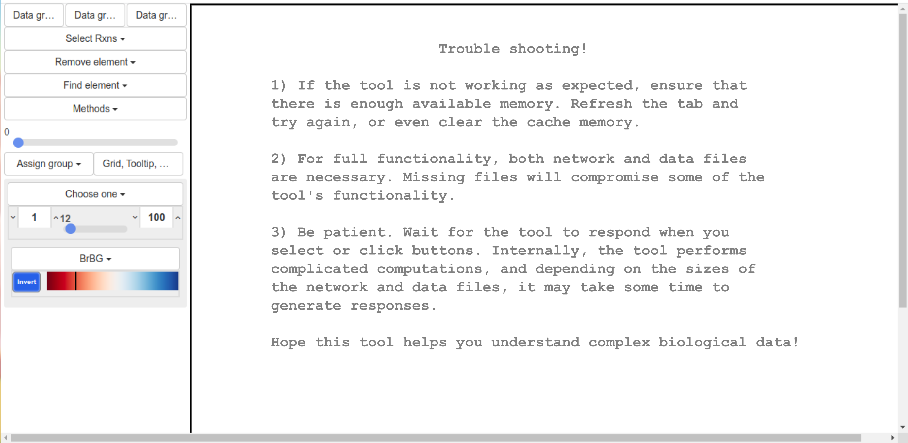


The datafile needs to be in .csv. Each datafile format have information of variables/conditions which are varied and quantitative measurements of various biomolecules which are represented as nodes or edges in the network. Below are the steps to make datafile:
- Assuming three variables which are varied to be ‘X’, ‘Y’, ‘Z’ where 'X', 'Y' and 'Z' can be any arbitrary variables such as organism name, chemical treatment etc. If there are no three parameters for any experiment data, then just define arbitrary variable and give a constant value to it. Here is what schema the datafile must follow.
-
CSV: CSV format is easier to create using Microsoft Excel or Libre Office. The csv file must have following header
Compound, Group, X1_Y1_Z1, X1_Y1_Z2,....
A , b, 1.0, 2.0 ....
.
.
Here, X1_Y1_Z1 represents three variables as a single string which are tied together using underscore character. Each line in the csv file has a compound name, its group id for example whether the compound represents "I" (intracellular) or "E" (extracellular) molecule etc, and quantitative measurement for X, Y and Z variables. Except for first two column, the rest of the header does not need to be in any particular order as long as all of them are included. Generally biological experiments have control experiment which provides a way to compare and relate how certain perturbation has impacted the experimental results. This control dataset is also need to be included in the above both datafile formats and must be represented as "C" in the datafile as a variable that is varied during the experiment.
Simple loading of a network and data file will allow users to visualize data on the network. By default, MINNO uses Control normalization, as mentioned below, for normalization. Users can change it through the Method menu, which offers multiple data normalization methods. Users can also assign a specific group to a certain set of nodes by first selecting nodes and then using the Assign Group menu to assign a specific group to them.
Data Normalization: The data normalization methods appears in the "Method" drop down menu after datafile is loaded. MINNO allow user to define groups to different nodes of the network. Subsequently, data from the datafile will be expressed onto nodes as per their group defined by the user. Each group from the datafile can be treated individually depending on which method is suitable for them. Four normalization methods are provided by the tool:
Let std_dev be the standard deviation of the control dataset. Then the normalized data can be obtained using below eq.
Ny(t) = (y(t) – c(t))/std_dev
here Ny(t) is the normalized value of y(t) from Y dataset at time t when it is compared with the control value via c(t) at the same time.
Let c_mean and std_dev be the mean and standard deviation of the control dataset. Then the normalized data can be obtained using below eq.
Ny(t) = (y(t) – c_mean)/std_dev
here Ny(t) is the normalized value of y(t) from Y dataset at time t when it is compared with the mean value of the control dataset C for all time point.
Parameter: The scaling value essentially allow how much one unit difference in the normalization data would translate into node sizes. Scaling value >1 means that the 1 unit difference in the normalized data would translate into >1 unit difference in the node size.
Assign Group: This menu contains options for different group that can be assigned to network nodes. To assign specific group to any node, one first need to select all nodes which belongs to the specific group such as intracellular or extracellular and then select the group from the Assign group drop-down menu. After assigning different groups to nodes, user can select the normalization method to each group and scale the values using scaling option.
Hide Menu: This menu offers options to hide certain aspect of the visualization.
It offers multitudes of features which are listed below:
Three data groups: These three drop-down menu will be containing 3 variables from the datafile. The datafile can be either csv file or json file. Click here for more details.
Select Rxns: Once a network file is loaded, the list of reactions will appears here. User can select all or specific ones by scrolling over the list.
Remove element:This menu contains list of nodes sorted based on their degree in the network. By selecting elements from the menu, these elements will be removed globally from the metabolic network.
Find element: This menu contains list of nodes in the network sorted alphabatically. User can use this list to find specific elements in the network.
In the menu right to the Assign-group menu, there are few more features as discussed below:
Attribute Menu: This provide all the options that user can vary as desired. They are grouped into text, rectangle, spacing, node,link, image resolution. User can vary various attributes by adjusting smaller slider below the menu. On either side of slider, there are inputs where user can provide values to adjust the range of the slider for different attributes as required. There is a limit of +-1000 units value. Anything above or below absolute 1000 units will set default to 1000 value.
Color Scale Menu: D3 library provides several sequential, diverging color scales with single or multiple hues. Click here for more detail.
Invert: Invert the color scale.
Color scale: This shows the color scale chosen from the Color Scale Menu. It also offers a thin black strip which can be dragged using mouse. User can select network element and set the color by dragging the black strip.
In addition to above features, the web-application has another menu which pop-up on mouse right click on the visualization screen. It offers options like file download into various formats and various geometric operation to make organization of network elements easier and faster.
Below we provide the list of options provided in the pop-up menu:
These options changes the order of groups but not the order of elements within individual group. This way user can push rectangle svg group at the bottom so that the network can be visualized on the top of it. However, when multiple rectangles are created, user need to manage how different rectangles will order themselves based on order of their creations.
For any further questions, please contact us at this email address: ayush.mandwal@ucalgary.ca
It is made available under a CC-BY-NC-ND 4.0 International license.
Copyright 2021 AYUSH MANDWAL